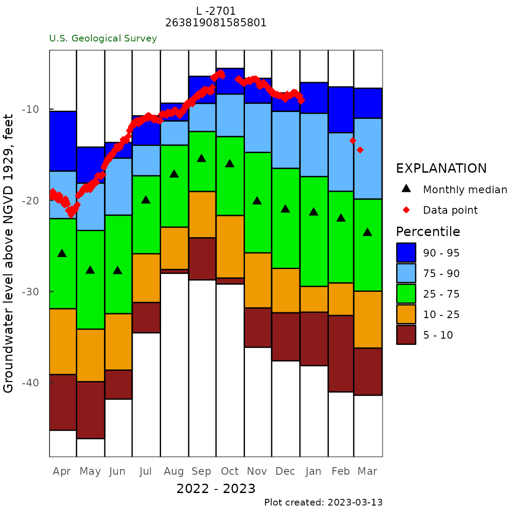
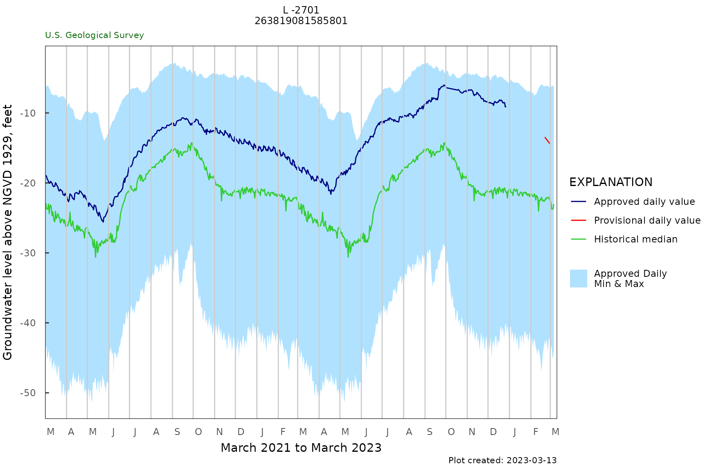
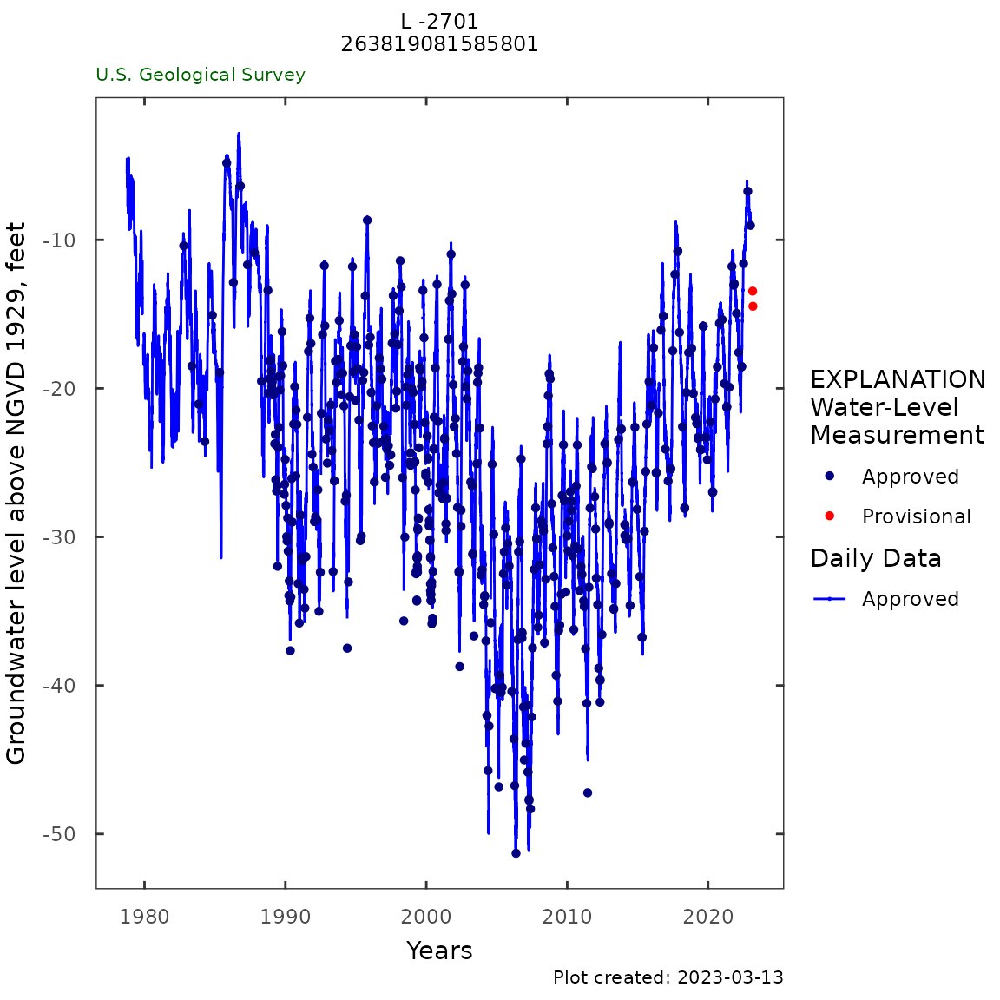
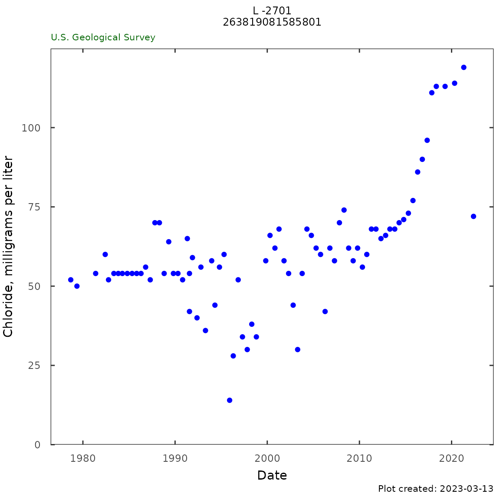
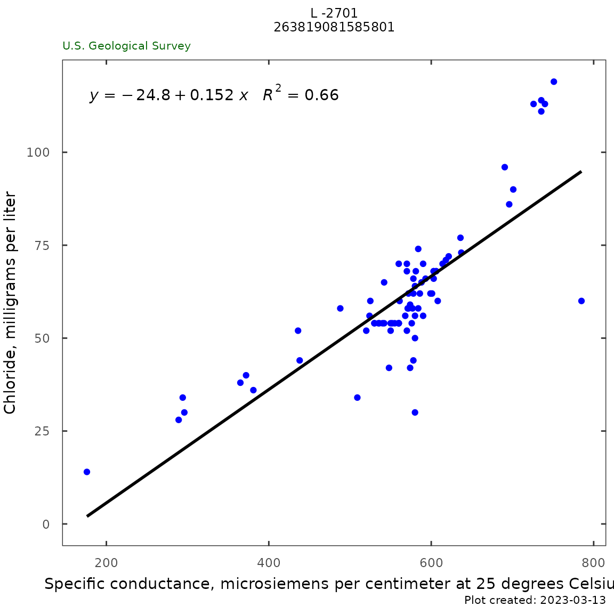

This vignette shows how to use HASP and other R tools to reproduce:
https://fl.water.usgs.gov/mapper/site_info.php?site=263819081585801&stationType=gw
This page merges information from USGS Groundwater Watch website and USGS Water Science Centers.
Get data using dataRetrieval
|
Using dataRetrieval code to get the data for this site:
library(dataRetrieval)
siteID <- "263819081585801"
parameterCd <- "62610"
statCd <- "00001"
# Daily data:
gw_level_dv <- readNWISdv(siteID,
parameterCd,
statCd = statCd)
# Field measured:
gwl_data <- readNWISgwl(siteID)
# Water quality data:
pcodes_cl_sc <- c("00095","90095","00940","99220")
qw_data <- readNWISqw(siteID, pcodes_cl_sc) |
Using the example data provided in the package:
siteID <- "263819081585801"
parameterCd <- "62610"
statCd <- "00001"
# Daily
gw_level_dv <- L2701_example_data$Daily
# Field
gwl_data <- L2701_example_data$Discrete
# QW:
qw_data <- L2701_example_data$QW
plot_title <- "L -2701\n263819081585801 " |
Groundwater Data
Monthly Frequency
monthly_frequency_plot(gw_level_dv,
date_col = "Date",
value_col = "X_62610_00001",
approved_col = "X_62610_00001_cd",
plot_title = plot_title,
plot_range = "Past year",
y_axis_label = "Groundwater level above NGVD 1929, feet")
monthly_frequency_table(gw_level_dv,
date_col = "Date",
value_col = "X_62610_00001",
approved_col = "X_62610_00001_cd")
|

|
| Jan |
-41.8 |
-32.7 |
-29.3 |
-21.6 |
-17.9 |
-11.7 |
-5.7 |
40 |
| Feb |
-42.8 |
-32.9 |
-29.4 |
-22.6 |
-19.0 |
-12.3 |
-7.2 |
41 |
| Mar |
-45.1 |
-36.5 |
-30.2 |
-24.6 |
-20.1 |
-11.8 |
-6.9 |
41 |
| Apr |
-48.5 |
-39.1 |
-32.7 |
-26.3 |
-22.0 |
-15.7 |
-9.3 |
41 |
| May |
-49.4 |
-40.3 |
-35.2 |
-28.8 |
-23.4 |
-18.0 |
-10.0 |
41 |
| Jun |
-42.8 |
-37.4 |
-33.2 |
-27.6 |
-21.4 |
-16.6 |
-11.0 |
40 |
| Jul |
-37.6 |
-31.2 |
-26.9 |
-20.6 |
-17.8 |
-14.4 |
-6.8 |
41 |
| Aug |
-32.5 |
-27.5 |
-22.9 |
-17.6 |
-14.2 |
-12.2 |
-4.8 |
41 |
| Sep |
-32.5 |
-24.2 |
-20.3 |
-15.6 |
-12.9 |
-9.5 |
-3.2 |
40 |
| Oct |
-35.9 |
-26.7 |
-21.5 |
-16.6 |
-12.7 |
-9.6 |
-4.8 |
42 |
| Nov |
-41.3 |
-32.0 |
-25.9 |
-21.1 |
-16.8 |
-10.3 |
-4.5 |
42 |
| Dec |
-42.4 |
-32.9 |
-28.4 |
-21.9 |
-17.4 |
-11.4 |
-4.9 |
41 |
|
Daily 2 year plot
daily_gwl_2yr_plot(gw_level_dv,
date_col = "Date",
value_col = "X_62610_00001",
approved_col = "X_62610_00001_cd",
plot_title = plot_title,
month_breaks = TRUE,
historical_stat = "median",
y_axis_label = "Groundwater level above NGVD 1929, feet")
daily_gwl_summary(gw_level_dv,
date_col = "Date",
value_col = "X_62610_00001",
approved_col = "X_62610_00001_cd")
|

|
| 1978-10-01 |
2019-12-11 |
14362 |
95 |
-51.08 |
-28.56 |
-21.97 |
-16.89 |
-2.81 |
|
Field Groundwater Level Data
|

|
| -51.3 |
-32.3 |
-26.1 |
-26.6 |
-20.5 |
-4.8 |
|
Period of Record - All Data Types
y_label <- dataRetrieval::readNWISpCode("62610")$parameter_nm
gwl_plot_all(gw_level_dv,
gwl_data,
y_label = y_label,
date_col = c("Date", "lev_dt"),
value_col = c("X_62610_00001", "sl_lev_va"),
approved_col = c("X_62610_00001_cd",
"lev_age_cd"),
plot_title = plot_title,
flip_y = FALSE)
site_data_summary(gw_level_dv, "X_62610_00001")
|

|
| -51.1 |
-28.5 |
-22 |
-22.7 |
-16.9 |
-2.8 |
|
Salinity Data and Analysis
Chloride
trend_plot(qw_data,
plot_title = plot_title,
pcode = c("00940","99220"))
kendell_test_5_20_years(dplyr::filter(qw_data,
parm_cd %in% c("00940","99220")),
seasonal = TRUE,
enough_5 = 1,
enough_20 = 1,
date_col = "sample_dt",
value_col = "result_va")
qw_summary(qw_data,
pcode = c("00940","99220"),
norm_range = c(225,999))
|

|
| 5-year trend |
1.000 |
0.014 |
9.25 |
-19065.5 |
Up |
| 20-year trend |
0.602 |
0.000 |
1.50 |
-4429.0 |
Up |
| Date of first sample |
1978-09-06 |
| First sample result (mg/l) |
52 |
| Date of last sample |
2019-04-17 |
| Last sample result (mg/l) |
113 |
| Date of first sample within 225 to 999 mg/l |
|
| Date of first sample with 1000 mg/l or greater |
|
| Minimum (mg/l) |
14 |
| Maximum (mg/l) |
113 |
| Mean (mg/l) |
59.3 |
| First quartile (mg/l) |
54 |
| Median (mg/l) |
58 |
| Third quartile (mg/l) |
67.5 |
| Number of samples |
78 |
|
Specific Conductance
qw_plot(qw_data, "Specific Conductance",
pcode = c("00095", "90095"))
qw_summary(qw_data,
pcode = c("00095","90095"),
norm_range = NA)
|

|
| Date of first sample |
1979-05-09 |
| First sample result (uS/cm @25C) |
580 |
| Date of last sample |
2019-04-17 |
| Last sample result (uS/cm @25C) |
748 |
| Minimum (uS/cm @25C) |
176 |
| Maximum (uS/cm @25C) |
785 |
| Mean (uS/cm @25C) |
550 |
| First quartile (uS/cm @25C) |
543 |
| Median (uS/cm @25C) |
560 |
| Third quartile (uS/cm @25C) |
568 |
| Number of samples |
388 |
|
Specific Conductance vs Chloride
|

|
| 1979-05-09 |
50 |
580 |
| 1981-05-20 |
54 |
536 |
| 1982-06-03 |
60 |
525 |
| 1982-10-12 |
52 |
520 |
| 1983-05-11 |
54 |
530 |
| 1983-11-02 |
54 |
550 |
| 1984-04-12 |
54 |
530 |
| 1984-10-24 |
54 |
540 |
| 1985-05-03 |
54 |
535 |
| 1985-10-31 |
54 |
560 |
|